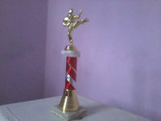
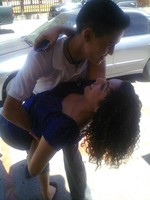
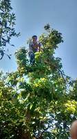
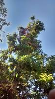

Mis comidas favoritas siempre han sido el espagueti y la pizza. También me gustan mucho los nachos pero no tanto como el espagueti y la pizza. Creo que lo que me gusta mas es el sabor del queso y también la harina. Creo que los comeré toda mi vida moderadamente claro. Me gustaba tanto el espagueti que como mi mama en ocasiones no quería hacerme y me decía si quieres hazte tu pues aprendí a hacerlo yo. Confieso que a mi no me salio tan rico. :(
Mis comidas favoritas siempre han sido el espagueti y la pizza. También me gustan mucho los nachos pero no tanto como el espagueti y la pizza. Creo que lo que me gusta mas es el sabor del queso y también la harina. Creo que los comeré toda mi vida moderadamente claro. Me gustaba tanto el espagueti que como mi mama en ocasiones no quería hacerme y me decía si quieres hazte tu pues aprendí a hacerlo yo. Confieso que a mi no me salio tan rico. :(
Mi color favorito es el azul en todas sus diferentes tonalidades.
Desde muy pequeño me gustaban las artes marciales pero nunca pude inscribirme en alguna escuela. Hasta que estuve en preparatoria y estaba el club de tae kwon do yo no la pensé dos veces y decidí entrar ahí. Las clases eran impartidas por el maestro de la escuela Perea`s Center, Andrés Perea. Participamos en varios eventos como los desfiles del 20 de noviembre y exhibiciones en la preparatoria. Llegue hasta cinta verde avanzada debido a que no tenía para pagar los exámenes para subir de cinta. Este arte marcial es muy caro.

Llegue a participar en un torneo que se llevó a cabo en el auditorio del tec. No gane mi combate pero aun así me dieron un trofeo.
Mi mamá en secundaria me enseño a manejar en el primer carro que tuvimos. Desde ese entonces a mí me gustó mucho pero no solo carros también motos. Mis tíos tenían y se las pedía para pasearme. Actualmente mi medio de transporte es moto.

Como ya lo había mencionado en otras secciones una de las cosas que más me gusta hacer es bailar donde sea.
También me encanta trepar en los arboles a bajar fruta o solo subir lo más alto que pueda mi mamá decía que era un chango. Aquí estoy bajando aguacates.
 